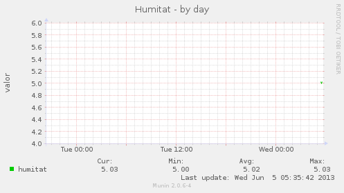
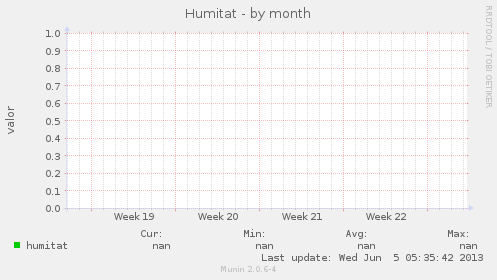

Overview
::
localdomain
::
localhost.localdomain
:: meteopy
Skip navigation
Problems
Critical
(0)
Warning
(3)
Unknown
(0)
Groups
localdomain
Categories
disk
[
d
w
m
y
]
meteopy
[
d
w
m
y
]
network
[
d
w
m
y
]
processes
[
d
w
m
y
]
system
[
d
w
m
y
]
Service graphs


Graph Information
Field
Internal name
Type
Warn
Crit
Info
humitat
humitat
gauge
100
2000
humitat recollida per el sensor.